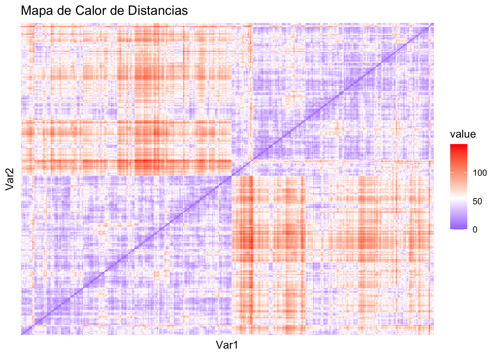
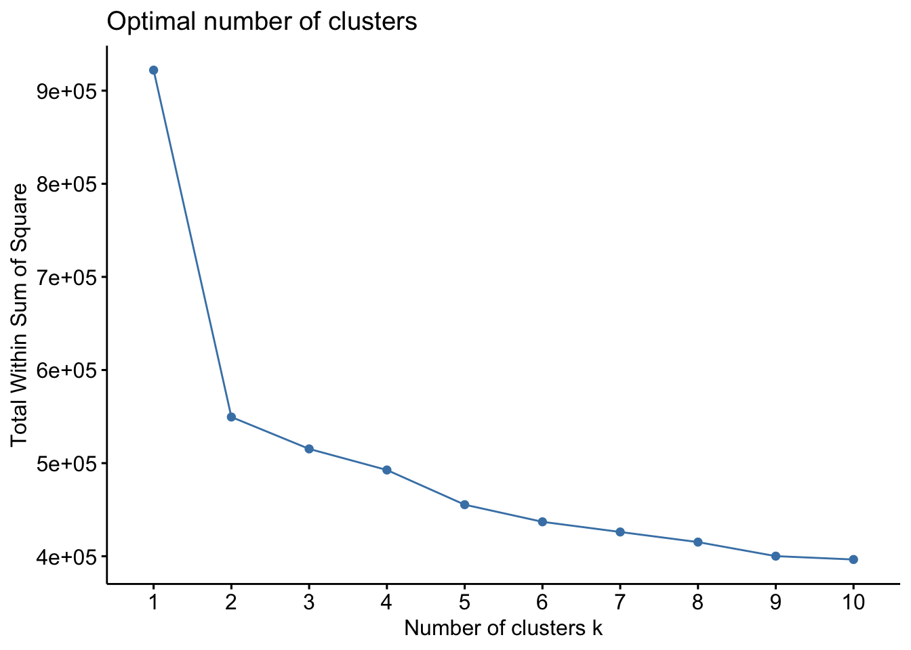
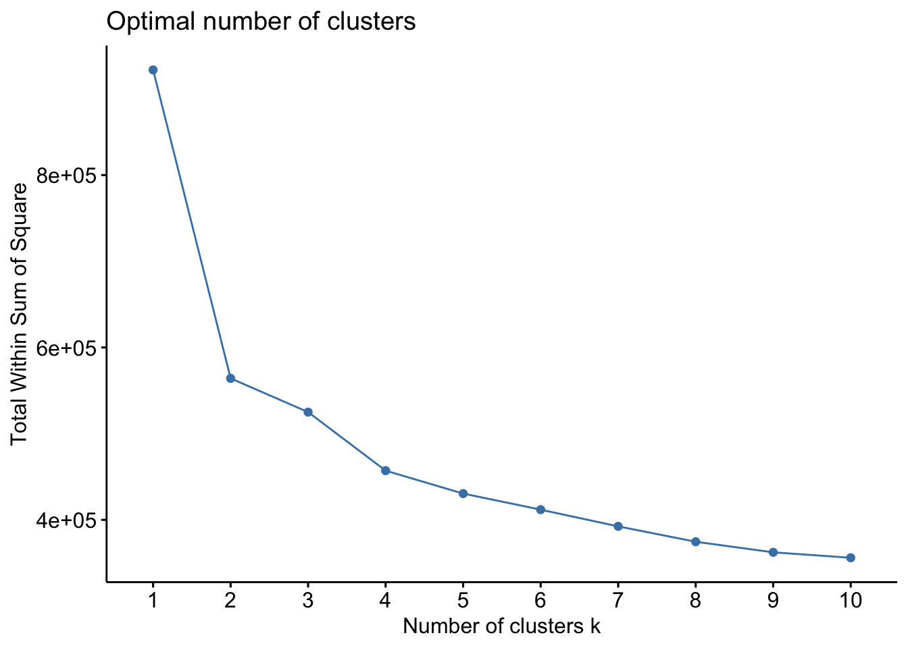
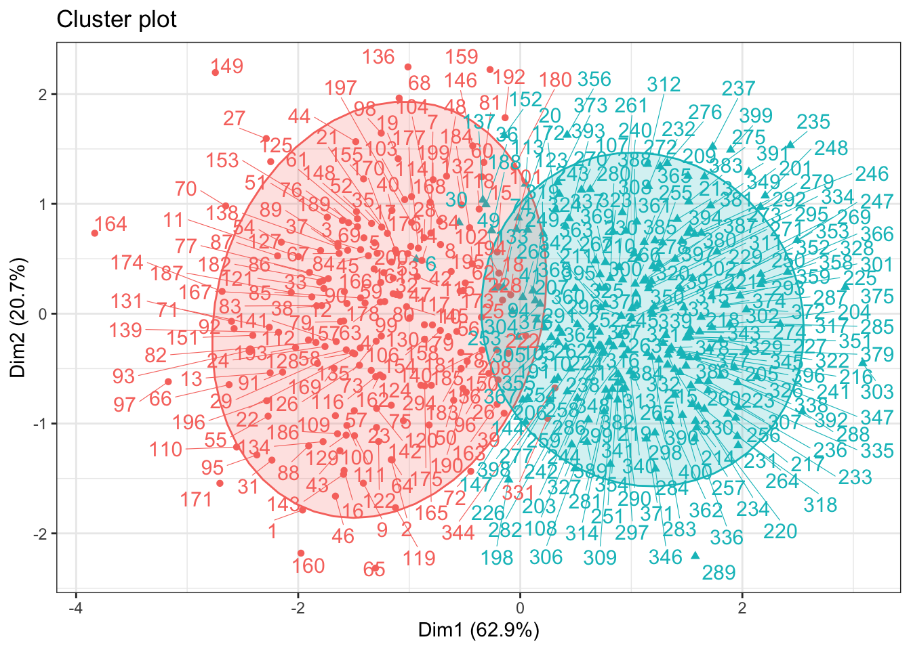

Problema 5
20582- Análisis de Datos para el GMAT
Enunciat
La tabla de datos_antropométricos presenta un conjunto de datos simulados que recopila información sobre 200 observaciones de hombres y mujeres. Este conjunto incluye las siguientes variables:
altura: Altura en centímetrospeso: Peso en kilogramoscintura: Circunferencia de la cintura en centímetroscadera: Circunferencia de la cadera en centímetrosIMC: Índice de Masa Corporal (IMC)grasa_corporal: Porcentaje de grasa corporal
Presentad un análisis exploratorio de los datos junto con un resumen de lo observado en el contexto del problema. Aplicad técnicas de clustering para agrupar individuos que tengan formas de cuerpos semejantes. Escribid una conclusión del análisis realizado en el contexto del problema
Anàlisi descriptiu de les dades
En aquest apartat tractarem de fer una visualització general de les dades i el seu comportament entre elles, com ara estudiar la seua correlació i mitjanes separat per sexe. A continuació mostrarem un parell de gràfiques on podrem veure el comportament de les nostres dades d’una forma més intuitiva i visual.
Podem observar que les variables d’altura i cintura tenen una correlació positiva molt alta respecte la resta, altres variables que també tenen una alta correlació positiva és el pes amb l’altura i cintura, fet del qual té prou sentit. D’altra banda, podem veure que la grasa corporal té una alta correlació negativa amb el pes, l’altura i la cintura.

Analitzem primer les variables de forma individual.
- Podem observar com la majoria pareixen seguir una distribució normal aproximada, però s’haurien de fer contratos d’hipòtesis per poder afirmar-ho.
- Separant les dades en funció del sexe observem que l’altura, el pes i la cintura tenen valors més alts en el cas dels homes, mentre que la majoria de dones tenen una grasa corporal superior. Els valors de la cadera i del IMC són similars als dos casos, encara que la mitjana continua sent major en el cas de les dones.
En cuanto al análisis por pares tenemos
- En las variables altura, peso y cintura observamos que los datos estan agrupados por sexo. Posteriormente, en el clustering, lo analizaremos.
- En las correlaciones, destacan
- La correlación positiva entre: peso y altura; cintura y altura ; cintura y peso.
- La correlación negativa entre: grasa corporal y altura; grasa corporal y peso ; grasa corporal y cintura.
- Mencionar que sorprende la baja correlación del IMC con la altura y el peso, ya que el IMC se calcula siguiendo la fórmula \(IMC = \frac{peso}{altura^2}\).
Las celdas azules indican observaciones con baja distancia, es decir, son valores similares entre sí. Las celdas rojas muestran observaciones con grandes distancias, es decir, valores diferentes entre sí. Las celdas blancas representan valores intermedios de distancia.
Se observan bloques azules a lo largo de la diagonal, esto indica la presencia de grupos de observaciones similares, lo que quiere decir que pueden ser posibles clústeres.
Mètode codo i visualtizació de cluster amb diferents distáncies
Similar al ejemplo 5.2.5 al tener datos numéricos muy diferentes procedemos a escalarlos, usaremos el método del codo para obtener el número de clusters óptimo. Primero probaremos usando la distáncia euclidea.
Parece razonable pues escoger \(k=4\) como número de clusters, ahora fijemos una semilla y veamos si los datos se comportan bien con este número de clusters. También calcularemos los puntos iniciales del algoritmo.
Al tener en total 6 variables el código reducirá la dimensión de estos usando sus dos primeras componenetes principales.
De manera directa podemos ver que entre el verde y azul hay muchíssimos valores solapados, lo que nos indica que un valor menor de clusters implicará un mejor resultado, al haber intersecciones tanto en los clusters rojo-lila como verde-azul veamos como resulta el clustering con \(k=2\).
Este clustering nos definiria dos tipos de cuerpos, pero debemos notar que la variabilidad definida por las componenetes principales es \(56.8\%<75\%\), por lo que no seria un modelo muy fiable. Esta falta de variabilidad puede ser debido al uso de k-medias o la distancia euclidiana, como podemos notar hay muchos valores lejanos al centro del cluster, en este caso será mas robusto el uso de k-medoides, el qual tiene mejor en cuenta estos “outliers”.
Al tener valores lejanos, el metodo “manhattan” resultará mas apto para el cálculo del número de clusters.

Para encontrar los clusters por k-medoides usaremos la función “pam” con \(k=2\), de nuevo usamos la metrica “manhattan” por la presencia de “outliers”.
Medoids:
ID altura peso cintura cadera IMC grasa_corporal
[1,] 178 0.9721887 0.6842922 0.7569817 -0.5562335 0.2941656 -0.6186077
[2,] 370 -0.3886831 -0.5876468 -0.7661555 0.4606467 -0.2047487 0.3684924
Clustering vector:
[1] 1 1 1 1 1 1 1 1 1 1 1 1 1 1 1 1 1 1 1 2 1 1 1 1 1 2 1 1 1 2 1 1 1 1 1 1 1
[38] 1 1 1 1 1 1 1 1 1 1 1 2 1 1 1 1 1 1 1 1 1 1 1 1 1 1 1 1 1 1 1 1 1 1 1 1 1
[75] 1 1 1 1 1 1 1 1 1 1 1 1 1 1 1 1 1 1 1 1 1 2 1 1 1 1 1 1 1 1 1 1 2 1 1 1 1
[112] 1 2 1 1 1 1 1 1 1 1 1 2 1 1 1 1 1 1 1 1 1 1 1 1 1 2 1 1 1 1 1 1 2 1 1 2 1
[149] 1 1 1 1 1 1 1 1 1 1 1 1 1 1 1 1 1 1 1 1 1 1 1 2 1 1 1 2 1 1 1 1 1 1 1 1 1
[186] 1 1 1 1 1 1 1 1 1 1 1 1 2 1 1 2 2 2 2 2 2 2 2 2 2 2 2 2 2 2 2 2 2 2 2 2 2
[223] 2 1 2 2 2 2 2 2 2 2 2 2 2 2 2 2 2 2 2 2 2 2 2 2 2 2 2 2 1 2 2 1 2 2 2 2 2
[260] 2 2 2 2 2 2 2 2 1 2 2 2 2 2 2 2 2 2 2 2 2 2 2 2 2 2 2 2 2 2 2 1 2 2 1 2 2
[297] 2 2 2 2 2 2 2 2 2 2 2 2 2 2 2 2 2 2 2 2 2 2 2 2 2 2 2 2 2 2 2 2 2 2 2 2 2
[334] 2 2 2 2 2 2 2 2 2 2 2 2 2 2 2 2 2 2 2 2 2 2 2 2 2 2 2 2 2 2 2 1 2 2 2 2 2
[371] 2 2 2 2 2 2 2 2 2 2 2 2 2 2 2 2 2 2 2 2 2 2 2 2 2 2 2 2 2 2
Objective function:
build swap
4.258150 3.916516
Available components:
[1] "medoids" "id.med" "clustering" "objective" "isolation"
[6] "clusinfo" "silinfo" "diss" "call" "data" El primer bloque muestra los medoides, los puntos centrales de cada clúster. Estos puntos son seleccionados para ser los más representativos de cada clúster.
El segundo bloque muestra el vector de clustering de las observaciones.Cada observación está asignada a un clúster. El vector contiene el número de clúster asignado a cada observación. Como tenemos que $ k=2$, tenemos dos clústeres en total: el clúster 1 y el clúster 2.
En el tercer bloque vemos los valores de build y swap. Build nos indica el valor de la suma total de las distancias entre las observaciones y los centros de los clústeres. Swap es el valor de la suma total de las distancias después de que el algoritmo intenta mejorar el clustering al intercambiar los centros de los clústers.
El valor de la función objetivo ha disminuido de 4.258150 a 3.916516 después de realizar el cambio de los medoids. Esto indica que el algoritmo ha logrado una mejor asignación de los clústeres al minimizar la suma de las distancias dentro de los clústeres.
Veamos una representación gráfica del clustering dado por la función “pam”:

Veamos si obviando algunas variables podemos encontrar un modelo que tenga mayor representación de variabilidad en las componenetes principales. Debido a la alta relación de las variables podemos ver con la matriz de corelaciones que las varaibles con mas peso son altura,peso y cintura. Veamos si obtenemos un modelo viable solo escogiendo estas variables.
mios<-datos %>% select("altura","peso","cintura")
fviz_nbclust(x = mios, FUNcluster = pam, method = "wss",
diss = dist(datos, method = "manhattan"))Por el método del codo el valor \(k=2\) dará los mejores resultados además de evitar solapamientos como antes.
medoide_clusters <- pam(x = mios, k = 2, metric = "manhattan")
fviz_cluster(object = medoide_clusters, data = mios, ellipse.type = "t", repel = TRUE) +
theme_bw() + theme(legend.position = "none")
Así obtenemos una variabilidad total de \(83.6\%\) con un solapamiento tolerable comparado con los valores de \(k\) mayores.
Medoids:
ID altura peso cintura
[1,] 99 173.35 78.21 92.91
[2,] 325 163.24 64.93 76.52
Clustering vector:
[1] 1 1 1 1 1 2 1 1 1 1 1 1 1 1 1 1 1 1 1 2 1 1 1 1 1 1 1 1 1 2 1 1 1 1 1 2 1
[38] 1 1 1 2 1 1 1 1 1 1 1 2 1 1 1 1 1 1 1 1 1 1 1 1 1 1 1 1 1 1 1 1 1 1 1 1 2
[75] 1 1 1 1 1 1 1 1 1 1 1 1 1 1 1 1 1 1 1 2 1 1 1 1 1 1 1 1 1 1 2 1 2 2 1 1 1
[112] 1 2 1 1 1 1 1 1 1 1 1 2 1 1 1 1 1 1 1 1 1 2 1 1 1 2 1 1 1 1 1 1 2 1 1 2 1
[149] 1 1 1 2 1 1 1 1 1 1 1 1 1 1 1 1 1 1 1 1 1 1 1 2 1 1 1 1 1 1 1 1 1 1 1 1 1
[186] 1 1 2 1 1 2 1 1 1 1 1 1 2 1 1 2 2 2 2 2 2 2 1 2 2 2 2 2 2 2 2 2 2 2 2 2 1
[223] 2 2 2 2 2 1 2 2 2 2 2 2 2 2 2 2 2 2 2 2 2 2 2 2 2 2 2 2 2 2 2 2 2 2 2 2 2
[260] 2 2 2 2 2 2 2 2 2 2 2 2 2 2 2 2 2 2 2 2 2 2 2 2 2 2 2 2 2 2 2 2 2 2 1 2 2
[297] 2 2 2 2 2 2 2 2 2 2 2 2 2 2 2 2 2 2 2 2 2 2 2 2 2 2 2 2 2 2 2 2 2 2 1 2 2
[334] 2 2 2 2 2 2 2 2 2 2 1 2 2 2 2 2 2 2 2 2 2 2 2 2 2 2 2 2 2 2 2 2 2 2 2 2 2
[371] 2 2 2 2 2 2 2 2 2 2 2 2 2 2 2 2 2 2 2 2 2 2 2 2 2 2 2 2 2 2
Objective function:
build swap
18.6294 17.3553
Available components:
[1] "medoids" "id.med" "clustering" "objective" "isolation"
[6] "clusinfo" "silinfo" "diss" "call" "data" Aquí, igual que en el modelo anterior, tenemos una representación de los centros de los clusters. Veamos con la matriz de confusión si los valores estan bien divididos entre mujer y hombre.
La siguiente matriz hace referencia al modelo k-medoide usando la distancia “manhattan”.
1 2
Hombre 178 22
Mujer 6 194Esto nos indica que hay 178 hombres en el clúster 1 y 22 hombres en el clúster 2. Ademas, hay 6 mujeres en el clúster 1 y 194 mujeres en el clúster 2. Como la mayoría de los hombres se encuentran en un clúster y la mayoría de las mujeres en el otro, se puede ver una clara separación entre los sexos en los diferentes clústers. Esto indicaría que el modelo ha logrado identificar diferencias entre sexos y ha agrupado las observaciones en función de estas diferencias.
Por lo tanto podemos deducir que el cluster ha conseguido separar los sexo de una forma bastante buena. Así y todo hay algunos casos minoritarios excepcionales que pueden ser debidos a la diversidad genética y al hecho que pueden existir personas con alturas anormales para lo que estaria asociado a su sexo.